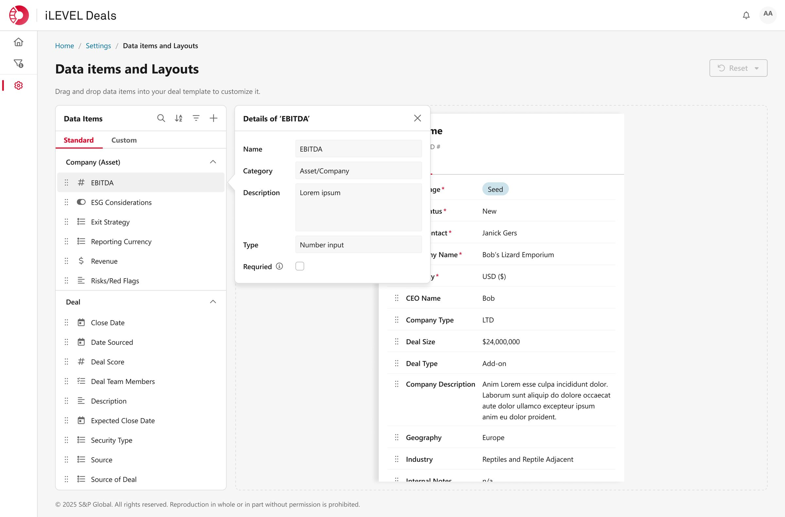
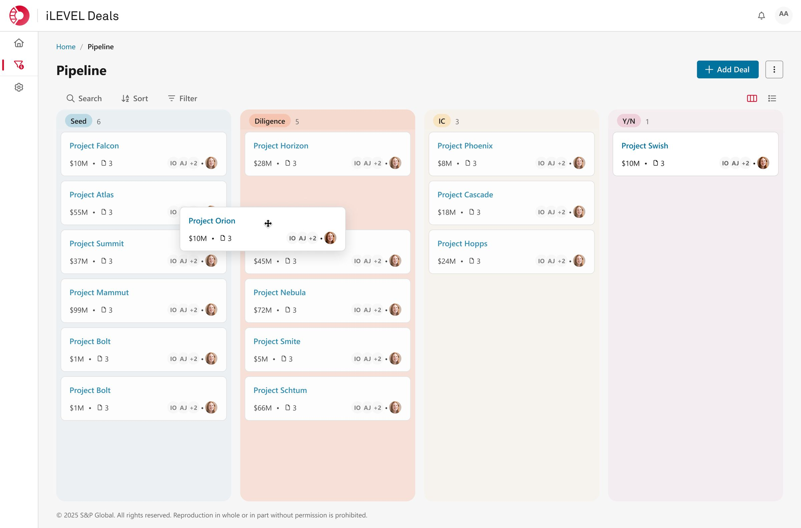
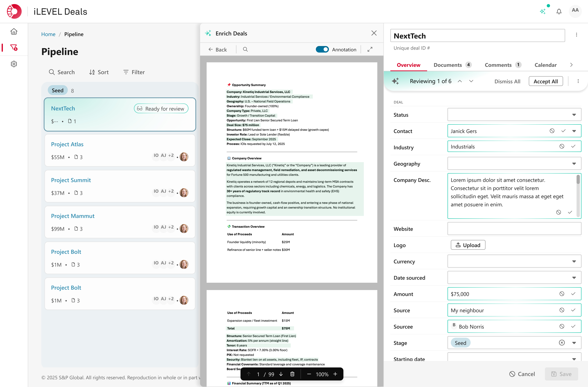
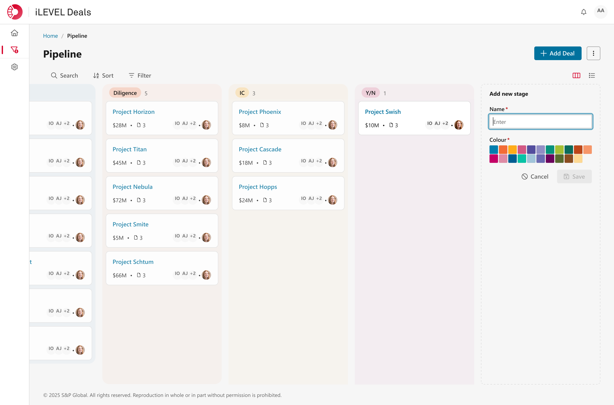
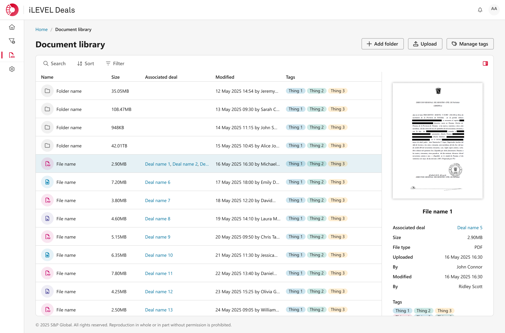
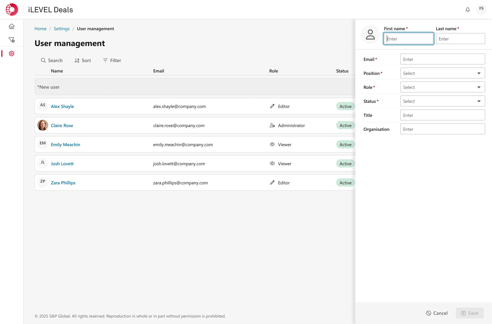
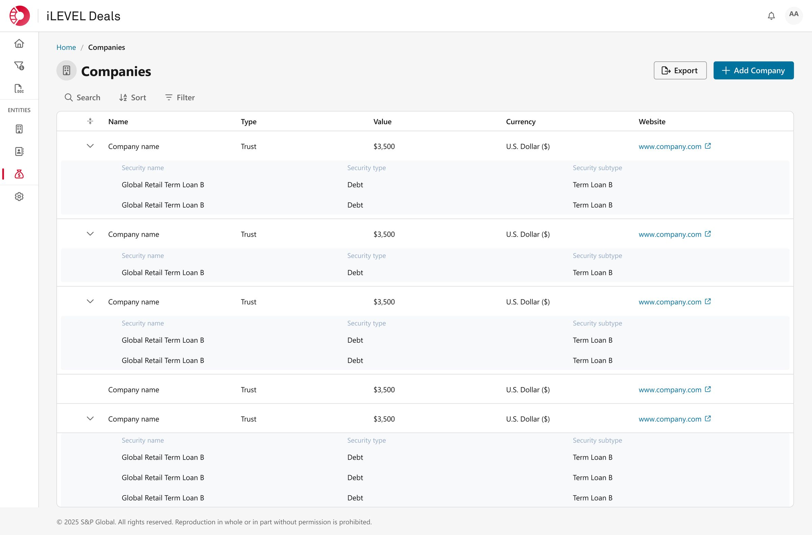

TL;DR
iLEVEL Deals was a zero-to-one product build for S&P Global's Private Markets division — a dedicated deal tracking platform designed to pull firms out of Excel and into something purpose-built. I joined as the core designer, working in a tight-knit product/design unit, and was responsible for establishing the design language, object model, and interaction patterns for an entire product from the ground up — often under significant time pressure. Across alpha and beta we designed and shipped everything from a configurable Kanban pipeline and a complex deal attributes system to AI-powered deal enrichment and a full document library. The product reached near-complete development before being cancelled following an organisational restructure. It never shipped. The work was some of the best I've done.
-
Company:
S&P Global -
Role:
Core designer -
Team:
2-3 designers, 3 product managers, 1 contracted dev team -
Timeline:
≈8 months, May to late 2025 -
Status:
Cancelled before launch
The brief
Private market deal tracking is, for most firms, still done in Excel. Deals start as a rumour, an
email,
a conversation at a conference — and by the time they close, they've accumulated months of
documents,
contacts, notes, and decisions scattered across inboxes and spreadsheets. iLEVEL Deals was going
to fix
that.
The product was conceived as a dedicated deal tracking platform: a place where a deal could be
seeded
from almost nothing and grow — through stages, enriched with data, connected to contacts and
funds and
documents — until it was ready to graduate into iLEVEL's existing portfolio monitoring suite.
Since we
were entering a market with established players, the differentiators had to be sharp:
frictionless deal
creation, deep configurability, and intelligent enrichment through AI and email integration. The
pitch
to clients was that this would meet them where they were and move them somewhere better.
I was brought in specifically as one of the core designers for this project, moved sideways into
the Private Markets vertical to provide design muscle for what was
clearly
going to be a fast-moving, high-stakes build.
The team
The core team was small and unusually well-aligned for a corporate product: three product
managers (all
with deep iLEVEL domain knowledge), a design lead who was overseeing this and a sister product,
and myself as a main designer on the ground. A third designer joined
towards the
in a later phase as pace increased.
Development was contracted to TCS, an external firm. More on them shortly.
The product and design relationship on this project was one of the tightest I've experienced. We
worked
as a genuine unit — not design serving product, or product steering design, but both thinking
through
problems together. Requirements were shaped collaboratively, design decisions were made with
full
product context, and the team's shared understanding of what we were building meant we could
move fast
without constantly relitigating fundamentals.
The early stages: ideation done right
The project opened well. Weeks of structured discussion sessions: requirements gathering, USP
definition,
roadmap planning, market positioning. The design lead's instinct was always to validate early and
often,
and that discipline shaped the culture of the whole team. Before a pixel was placed, we had a clear
picture of who we were designing for, what they were doing in Excel that we needed to replace, and
what
we could offer that nobody else was offering.
Despite all this however, an undercurrent of commercial concern ran beneath the surface. Questions
about
market
viability — whether there were enough potential clients, whether the timing was right — were raised
explicitly by the design lead, and echoed by others as the project progressed. Product and
commercial
were confident. We kept building.
Early lo-fi mockups helped crystallise thinking rather than commit to solutions. The goal at this
stage
was to make ideas discussable, not deliverable.
The TCS crunch: designing a product in weeks
Then reality arrived in the form of a contractual requirement we hadn't fully anticipated.
TCS needed completed design mocks — not sketches, not wireframes, but detailed, considered,
production-ready designs — for the entirety of Phase 1 (alpha), and most of Phase 2 (beta), before they
could begin estimating.
What followed was one of the most intense periods of design work I've experienced. In the space of a
few
weeks — largely driven by me, with my design lead overseeing and the wider team feeding in where
they
could — we had to establish the design language for an entire product from the ground up. Not just
screens, but the underlying logic: the information architecture, the front-end object model, the
view
and edit patterns, the levels of configurability, the opinionated defaults. Patterns that would need
to
scale to features we hadn't even started discussing yet.
The system design challenge was particularly significant. iLEVEL Deals has a genuinely complex data
model
— deals, contacts, funds, companies, securities, all interconnected, all configurable. Getting that
model expressed in a UI that felt simple to a non-technical user required a lot of thinking up
front.
Mercifully, we had a robust, mature design system to build against — which removed a
whole
category of decisions and let us focus on what was unique to this product.
We drew the line at Phase 1 mocks, with a clear caveat that refinements would follow as we had time
to
think properly and test with users. It was the right call. The irony is that TCS didn't begin coding
for
months after receiving those mocks — the urgency, it turned out, was largely artificial. But the
crunch
had a silver lining: it accelerated our shared understanding of the product considerably.
The design work: what we actually built
Over alpha and beta, the product grew from a core set of features into something genuinely sophisticated. Some of the work I'm most proud of:
Deal attributes
This was the hardest design problem on the project and the one I'm most satisfied with.
The challenge was two-sided. First, understanding the underlying data model well enough to
design a configuration interface for it — a system where users (not just admins, a distinction
user
research made clear was critical) could create and customise the data attributes they wanted to
track, from EBITDA and
close date to entirely bespoke fields. Second, making that configuration feel simple and
intuitive
rather than like administering a database.
The solution leaned heavily on progressive disclosure — surfacing just enough complexity at each
step
while keeping the harder configuration tucked out of immediate sight. The other move that
unlocked the
design was treating the attributes section as primarily a place to configure the detail view.
Rather
than abstracting the data model from the consumption experience, users could drag attributes
onto a mock drawer and see a live preview of exactly what it would look like. The distinction
between "setting up my data" and "designing my view" dissolved.
This design, despite being one of the most rushed during the TCS crunch, held up without
significant
changes across months of subsequent work — which is probably the best measure of whether a
design
decision was actually sound.

Kanban view
The deal pipeline Kanban was the product's signature view — the thing you'd see in a demo,
the
thing
clients got excited about. The design challenge was folding in a lot of functionality
(configurable
swimlanes, drag-and-drop deal cards, search, filter, sort, inline stage editing) while
keeping
the
surface clean enough to be immediately readable.
The guiding principle was keeping things in context. If you want to rename a stage, you do
it
directly
on
the board. If you want to reorder it, you use the ellipsis that appears on hover and move it
left or
right. Nothing lives in a separate settings panel that you have to navigate to and back
from.
The
board
is the configuration surface.
I did advocate for draggable lane reordering — it felt like the more natural interaction —
but
development said no and we found a clean alternative. That kind of pragmatic negotiation was
a
constant
rhythm on this project.

AI and email deal enrichment
Beta introduced two of the product's most forward-looking features: the ability to upload
documents
and
have AI automatically seed or enrich deals, and the ability to email documents directly into
the
app
for
the same purpose.
These were features my colleagues led on, but I contributed significantly to the thinking
around
trust
and transparency. The core challenge — especially at a time when AI-generated content
patterns
were
less established than they are today — was making sure users never lost visibility of what
the
AI
had
touched. We developed a set of "AI has touched this" patterns: clear indicators that flagged
any
attribute populated by the system rather than a human, with the ability to inspect what the
previous
value was, what the new value was, where it came from, and the reasoning behind it. Users
could
bulk
review and accept or reject changes.
We also introduced a degree of urgency tiering: small tweaks could be flagged but
auto-accepted,
while
significant changes — new deals, large batches of updates — pulled the deal into a limbo
state
requiring
explicit human review before anything committed. The goal was trust through transparency,
not
trust
through hiding the machine.

The broader pattern language
- Sensible, research-informed defaults that can be changed, but don't have to be.
- Consistent view and edit patterns. The add experience and the view experience look essentially the same — deliberately. Fewer distinct patterns means less to learn.
- Progressive disclosure. Complexity exists in the product, but it's introduced at the right moment, not all at once.




Working with TCS: quality as a design responsibility
The development quality issues with TCS became significant enough that we implemented a formal design
QA
process ahead of schedule. For every delivered build, I would conduct a detailed inspection —
padding,
spacing, typography, component states, interaction behaviour — and log issues against the mocks.
Product
ran functional QA in parallel.
It was time-consuming and, frankly, shouldn't have been necessary given the fidelity of what we'd
handed
over. But it was important. A product that looks and behaves slightly wrong erodes trust with users
in
ways that are hard to quantify and harder to recover. Holding the line on quality, even when it
created
friction, was the right call.
The ending
Near the end of our involvement, commercial conversations about how to market and sell iLEVEL Deals
had
picked up — workshops, pricing discussions, go-to-market strategy. The work was progressing well.
Development was approaching a launchable state.
Then came a restructure.
The design team working on iLEVEL Deals was reassigned — moved into a different vertical that needed
resource — and two new designers were brought in to take over. We had a week for the transition and
used
it as well as
we
could: documenting decisions, running knowledge-transfer sessions, leaving the Figma files in the
clearest state we could manage. We tried to hand over everything we'd have wanted to
receive.
The transition was difficult for the incoming team. Without the context we'd accumulated over months
—
the product domain knowledge, the design rationale, the understanding of where the roadmap was
heading —
momentum stalled. Shortly after, two of the three product managers left the team. The project was
cancelled.
iLEVEL Deals never shipped.
What I took from it
There's a version of this story that reads as frustrating, and some days it still does. A product
that
was genuinely good — cited internally as a poster child for both product and design — cancelled
before
anyone outside the company ever used it.
But the more useful reading is this: the work was real, the craft was real, and the process that
produced
it was real. None of that disappears because the project did.
What iLEVEL Deals taught me is that the value of doing the work properly isn't contingent on
shipping.
Opinionated defaults that came from real user research, design patterns that held up under pressure,
a
data model expressed in a UI that actual users found intuitive — those things have value whether or
not
they ever go live. They represent a standard of thinking that travels.
It also confirmed something I believe about teams: a small, aligned, genuinely collaborative group
will
outperform a larger, fragmented one in almost every dimension. The product/design unit on iLEVEL
Deals
was one of the best working environments I've been part of. That's worth naming.